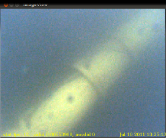
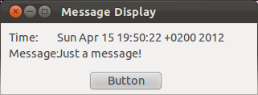

In this tutorial, you will learn how to display live and logged data with the help of Vizkit and how to write a custom GUI to display the data of your orocos task.
To understand this tutorial, you must have completed the basic tutorials and the data logging tutorial. Basic knowledge about Qt, Qt Designer and qtruby is also necessary.
This tutorial directly builds on the previous tutorials. Additionally, you have to have the rock packages gui/vizkit and gui/rock_widget_collection installed.
In case you are starting here, the required packages are mentioned on the introduction page.
Vizkit is a ruby framework built around qtruby to support the developer with functionality to display his custom data in a convenient way. It is shipped with some Qt Widgets to display some basic types. But its real strength lies in the ability to be customized.
Displaying Camera Samples For some base types like the camera frame, Vizkit has a special display widget. To create an instance of a widget specialised to display camera frames, you can use the Vizkit ruby method display and an Orocos port which is producing camera frames as an argument. In the case below, the camera is substituted by a log file called “bottom_camera.0.log”, but you can use the same syntax for Orocos tasks as well.
require 'orocos'
require 'vizkit'
include Orocos
Orocos.initialize
log = Orocos::Log::Replay.open("bottom_camera.0.log")
Vizkit.display log.bottom_camera.frame
Vizkit.control log
Vizkit.exec
For testing purposes, a small camera log file can be found here. It shows an underwater test pipeline used during a student competition in Italy, Sauc-E.

Vizkit is able to load ui files created with the Qt Designer. In this case, a small GUI is loaded whose ui file can be found here (right click - save as). If you want to create your own ui file, use the Qt Designer, e.g. by calling designer on the command line.
This ui basically creates a window with two dedicated labels for writing strings (named Time and Message) and a push button (named Button) to trigger actions. Further on, this file is referred to as test_gui.ui.
To load the ui file with Vizkit, use the Vizkit ruby method load. After the ui file is loaded, you can access all embedded objects by their object name and their qt signal/slots.
require 'vizkit'
#load ui file
gui = Vizkit.load 'test_gui.ui'
#do something if someone is clicking on the
#button named Button
gui.Button.connect(SIGNAL('clicked()')) do
puts 'someone presses the button'
gui.Time.setText(Time::now.to_s)
end
#display something in the label named Time
gui.Time.setText(Time::now.to_s)
gui.Message.setText("Just a message!")
gui.show
Vizkit.exec

As you can see, this small script displays the current time and a message. Each time the button is pressed, the message is displayed on the command line and the time label is updated.
Just running the ui is nice for testing purposes, but the more interesting part is connecting it to a real orocos task.
Use the following script as a basic example for the interaction between a vizkit-ui and an orocos task.
require 'vizkit'
include Orocos
Orocos.initialize
gui = Vizkit.load 'test_gui.ui'
Orocos.run 'faster_message_producer' do
producer = Orocos::Async.name_service.get 'producer'
prod_msg = producer.port "messages"
producer.configure
#change a property when the button is pressed
gui.Button.connect(SIGNAL('clicked()')) do
# First: stop and cleanup the producer task
producer.stop
producer.cleanup
# change the configuration (uncomment if your code supports it)
#producer.config do |p|
# p.uppercase = !p.uppercase
#end
# start the task again
producer.configure
producer.start
end
# start the task
producer.start
# connect the port of message producer to our ui
prod_msg.on_data do |data|
gui.Time.setText data.time.to_s
gui.Message.setText data.content
end
# start vizkit
gui.show
Vizkit.exec
end
We do several things here which require some explanation:
As the action of the button we want to switch the configuration of the message producer. To do this we have to stop our current task and clean up the configuration. Then we change the config, configure the task again and start it. This scheme is necessary since it is currently the only safe way to change the configuration of a task. You will notice a slight pause in the time display when pressing the button, which is caused by this sequence.
We connect our two labels with the output port of the message producer.
If you want to connect your GUI to a log file, you can use the same method as for an orocos task. The following script connects test_gui.ui to a component, which uses the log from the previous tutorial. Since we only display data, the button is not connected.
require 'vizkit'
log = Orocos::Log::Replay.open('producer.0.log')
gui = Vizkit.load 'test_gui.ui'
# connect the port of message producer to our ui
log.producer.messages.on_data do |data|
gui.Time.setText data.time.to_s
gui.Message.setText data.content
data # never forget this!!!
end
gui.show
Vizkit.control log
Vizkit.exec
In this tutorial, you learned how to write a simple GUI and how to connect its object to log files and orocos tasks.
Progress to the next tutorial.